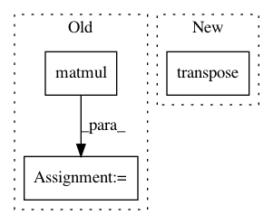

315990901cdcdca241013ee5e6c581391bae2523,geomstats/geometry/spd_matrices.py,SPDMetricBuresWasserstein,inner_product,#SPDMetricBuresWasserstein#,697
Before Change
rotated_tangent_vec_a = gs.matmul(transp_eigvecs, tangent_vec_a)
rotated_tangent_vec_a = gs.matmul(rotated_tangent_vec_a, eigvecs)
rotated_tangent_vec_b = gs.matmul(transp_eigvecs, tangent_vec_b)
rotated_tangent_vec_b = gs.matmul(rotated_tangent_vec_b, eigvecs)
ones = gs.ones(eigvals.shape)
vertical_index = gs.einsum("...i,...j->...ij", eigvals, ones)
horizontal_index = gs.einsum("...j,...i->...ij", eigvals, ones)
After Change
Inner-product.
eigvals, eigvecs = gs.linalg.eigh(base_point)
transp_eigvecs = Matrices.transpose(eigvecs)
rotated_tangent_vec_a = Matrices.mul(transp_eigvecs, tangent_vec_a,
eigvecs)
rotated_tangent_vec_b = Matrices.mul(transp_eigvecs, tangent_vec_b,
eigvecs)
In pattern: SUPERPATTERN
Frequency: 3
Non-data size: 3
Instances
Project Name: geomstats/geomstats
Commit Name: 315990901cdcdca241013ee5e6c581391bae2523
Time: 2020-12-15
Author: yann.thanwerdas@gmail.com
File Name: geomstats/geometry/spd_matrices.py
Class Name: SPDMetricBuresWasserstein
Method Name: inner_product
Project Name: jadore801120/attention-is-all-you-need-pytorch
Commit Name: 8b78758cf5df1b515012e8458d07f765309f7fc8
Time: 2019-11-30
Author: jadore801120@gmail.com
File Name: transformer/Modules.py
Class Name: ScaledDotProductAttention
Method Name: forward
Project Name: geomstats/geomstats
Commit Name: 315990901cdcdca241013ee5e6c581391bae2523
Time: 2020-12-15
Author: yann.thanwerdas@gmail.com
File Name: geomstats/geometry/spd_matrices.py
Class Name: SPDMetricBuresWasserstein
Method Name: exp